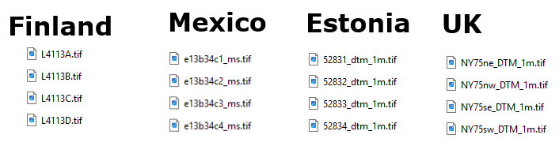

"A foolish consistency is the hobgoblin of little minds". While it could be possible to create a single file naming scheme for UTM tiles, it would need to account for other projections like the UKOS and French Lambert and probably others, and the very differnt schemes based on the national maps. This system evolved as additional countries were added, using the simplest way to convert files names into a tile name.
Area names cannot have an underscore as the third character, since that is used as the country identifier.
To find the location of a tile:
Tile names and country codes are not case sensitive. MICRODEM converts all strings to uppercase before comparisons.
| Quarter Quad File Name Examples |
 |
Last revision 11/25/2025